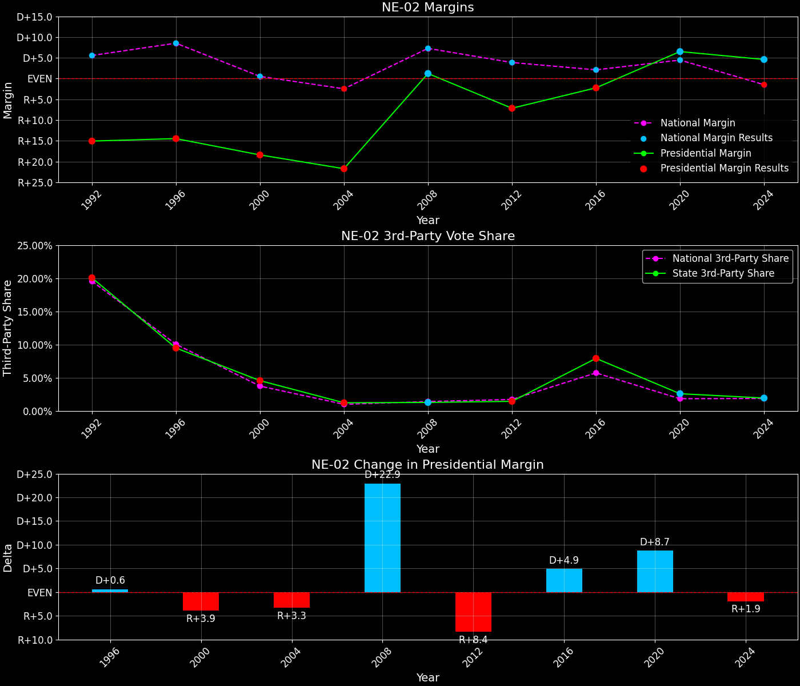
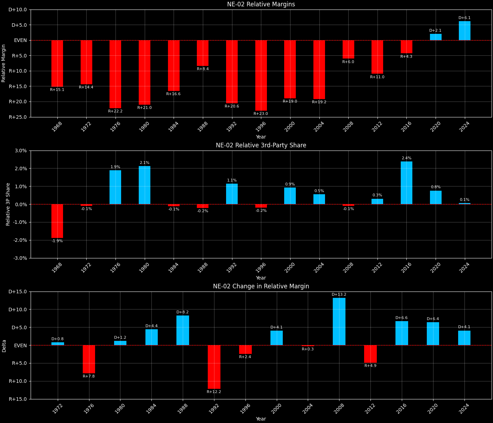
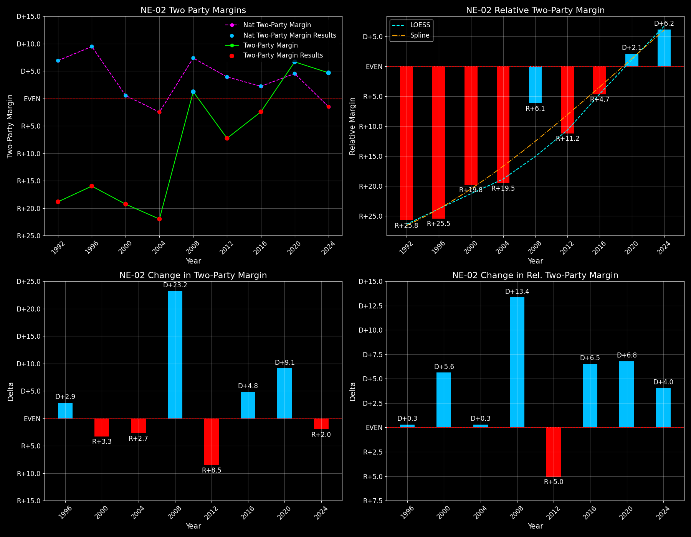

← Back to Map

Margins · 3rd-Party share · Pres. deltas

Relative margins · Relative 3rd-Party · Rel. deltas
Nebraska's 2nd Congressional District (NE-02) — Total Data
| Year | EVs | D | R | State Margin | Nat. Margin | Rel. Margin | Total votes |
|---|
| 1968 | 1 | 59,078(36.3%) | 84,690(52.0%) | R+15.7 | R+0.6 | R+15.1 | 162,812 |
| 1972 | 1 | 56,211(31.0%) | 124,823(69.0%) | R+37.9(Δ R+22.2) | R+23.5(Δ R+23.0) | R+14.4(Δ D+0.8) | 181,034 |
| 1976 | 1 | 76,075(38.9%) | 115,237(58.9%) | R+20.0(Δ D+17.9) | D+2.2(Δ D+25.7) | R+22.2(Δ R+7.8) | 195,642 |
| 1980 | 1 | 61,448(30.0%) | 124,810(60.9%) | R+30.9(Δ R+10.9) | R+9.9(Δ R+12.1) | R+21.0(Δ D+1.2) | 204,903 |
| 1984 | 1 | 70,238(32.6%) | 144,901(67.4%) | R+34.7(Δ R+3.8) | R+18.1(Δ R+8.2) | R+16.6(Δ D+4.4) | 215,139 |
| 1988 | 1 | 94,071(41.9%) | 130,193(58.1%) | R+16.1(Δ D+18.6) | R+7.7(Δ D+10.4) | R+8.4(Δ D+8.2) | 224,264 |
| 1992 | 1 | 78,816(32.3%) | 115,380(47.3%) | R+15.0(Δ D+1.1) | D+5.6(Δ D+13.3) | R+20.6(Δ R+12.2) | 243,882 |
| 1996 | 1 | 84,667(38.0%) | 116,889(52.5%) | R+14.5(Δ D+0.5) | D+8.6(Δ D+3.0) | R+23.0(Δ R+2.4) | 222,656 |
| 2000 | 1 | 89,148(38.5%) | 131,886(56.9%) | R+18.5(Δ R+4.0) | D+0.5(Δ R+8.0) | R+19.0(Δ D+4.1) | 231,612 |
| 2004 | 1 | 97,858(38.5%) | 153,041(60.2%) | R+21.7(Δ R+3.2) | R+2.5(Δ R+3.0) | R+19.2(Δ R+0.3) | 254,424 |
| 2008 | 1 | 138,809(50.0%) | 135,439(48.8%) | D+1.2(Δ D+22.9) | D+7.3(Δ D+9.7) | R+6.0(Δ D+13.2) | 277,809 |
| 2012 | 1 | 121,889(45.5%) | 140,976(52.6%) | R+7.1(Δ R+8.3) | D+3.9(Δ R+3.4) | R+11.0(Δ R+4.9) | 268,027 |
| 2016 | 1 | 131,030(44.9%) | 137,564(47.2%) | R+2.2(Δ D+4.9) | D+2.1(Δ R+1.8) | R+4.3(Δ D+6.6) | 291,680 |
| 2020 | 1 | 176,468(52.0%) | 154,377(45.4%) | D+6.5(Δ D+8.7) | D+4.4(Δ D+2.3) | D+2.1(Δ D+6.4) | 339,666 |
| 2024 | 1 | 163,541(51.3%) | 148,905(46.7%) | D+4.6(Δ R+1.9) | R+1.5(Δ R+6.0) | D+6.1(Δ D+4.1) | 318,646 |
Column explanations
- Δ
- Change (delta) in the value from the previous election year.
- Year
- Election year.
- EVs
- Number of electoral votes allocated to this state or unit.
- D
- Number of votes for the Democratic candidate (raw count(pct%)).
- R
- Number of votes for the Republican candidate (raw count(pct%)).
- State Margin
- Margin between the two major-party candidates, including third-party votes ((D - R)/total).
- Nat. Margin
- The national presidential margin for that year, including third-party votes ((D_total - R_total)/total_votes).
- Rel. Margin
- The presidential margin relative to the national presidential margin (Margin - Nat. Margin).
- Total votes
- Total voter turnout or ballots cast (when provided).
Nebraska's 2nd Congressional District (NE-02) — Third-Party Data
| Year | D | R | Other votes | State 3rd-Party Share | 3rd-Party Nat. Share | 3rd-Party Rel. Share |
|---|
| 1968 | 59,078(36.3%) | 84,690(52.0%) | 19,044(11.7%) | 11.70% | 13.59% | -1.89% |
| 1972 | 56,211(31.0%) | 124,823(69.0%) | 0(0.0%) | 0.00% | 0.09% | -0.09% |
| 1976 | 76,075(38.9%) | 115,237(58.9%) | 4,330(2.2%) | 2.21% | 0.33% | 1.88% |
| 1980 | 61,448(30.0%) | 124,810(60.9%) | 18,645(9.1%) | 9.10% | 6.98% | 2.12% |
| 1984 | 70,238(32.6%) | 144,901(67.4%) | 0(0.0%) | 0.00% | 0.12% | -0.12% |
| 1988 | 94,071(41.9%) | 130,193(58.1%) | 0(0.0%) | 0.00% | 0.21% | -0.21% |
| 1992 | 78,816(32.3%) | 115,380(47.3%) | 49,686(20.4%) | 20.37% | 19.23% | 1.14% |
| 1996 | 84,667(38.0%) | 116,889(52.5%) | 21,100(9.5%) | 9.48% | 9.68% | -0.20% |
| 2000 | 89,148(38.5%) | 131,886(56.9%) | 10,578(4.6%) | 4.57% | 3.65% | 0.92% |
| 2004 | 97,858(38.5%) | 153,041(60.2%) | 3,525(1.4%) | 1.39% | 0.84% | 0.55% |
| 2008 | 138,809(50.0%) | 135,439(48.8%) | 3,561(1.3%) | 1.28% | 1.38% | -0.10% |
| 2012 | 121,889(45.5%) | 140,976(52.6%) | 5,162(1.9%) | 1.93% | 1.62% | 0.30% |
| 2016 | 131,030(44.9%) | 137,564(47.2%) | 23,086(7.9%) | 7.91% | 5.54% | 2.38% |
| 2020 | 176,468(52.0%) | 154,377(45.4%) | 8,821(2.6%) | 2.60% | 1.84% | 0.76% |
| 2024 | 163,541(51.3%) | 148,905(46.7%) | 6,200(1.9%) | 1.95% | 1.88% | 0.06% |
Column explanations
- Year
- Election year.
- D
- Number of votes for the Democratic candidate (raw count(pct%)).
- R
- Number of votes for the Republican candidate (raw count(pct%)).
- Other votes
- Number of votes for third-party (other) candidates (raw count(pct%)).
- State 3rd-Party Share
- Share of the vote received by third-party (other) candidates.
- 3rd-Party Nat. Share
- The national third-party share for that year (3rd-Party votes / total votes).
- 3rd-Party Rel. Share
- Third-party share relative to the national third-party share (3rd-Party share - Nat. 3rd-Party share).

Two-party margins · relative · deltas
Nebraska's 2nd Congressional District (NE-02) — Two-Party Data
| Year | EVs | D | R | 2-Party Margin | 2-Party Nat. Margin | 2-Party Rel. Margin |
|---|
| 1968 | 1 | 59,078(41.1%) | 84,690(58.9%) | R+17.8 | R+0.7 | R+17.1 |
| 1972 | 1 | 56,211(31.0%) | 124,823(69.0%) | R+37.9(Δ R+20.1) | R+23.6(Δ R+22.9) | R+14.3(Δ D+2.8) |
| 1976 | 1 | 76,075(39.8%) | 115,237(60.2%) | R+20.5(Δ D+17.4) | D+2.2(Δ D+25.8) | R+22.7(Δ R+8.3) |
| 1980 | 1 | 61,448(33.0%) | 124,810(67.0%) | R+34.0(Δ R+13.5) | R+10.6(Δ R+12.8) | R+23.4(Δ R+0.7) |
| 1984 | 1 | 70,238(32.6%) | 144,901(67.4%) | R+34.7(Δ R+0.7) | R+18.1(Δ R+7.5) | R+16.6(Δ D+6.8) |
| 1988 | 1 | 94,071(41.9%) | 130,193(58.1%) | R+16.1(Δ D+18.6) | R+7.8(Δ D+10.4) | R+8.3(Δ D+8.2) |
| 1992 | 1 | 78,816(40.6%) | 115,380(59.4%) | R+18.8(Δ R+2.7) | D+6.9(Δ D+14.7) | R+25.7(Δ R+17.4) |
| 1996 | 1 | 84,667(42.0%) | 116,889(58.0%) | R+16.0(Δ D+2.8) | D+9.5(Δ D+2.6) | R+25.5(Δ D+0.3) |
| 2000 | 1 | 89,148(40.3%) | 131,886(59.7%) | R+19.3(Δ R+3.3) | D+0.5(Δ R+8.9) | R+19.9(Δ D+5.6) |
| 2004 | 1 | 97,858(39.0%) | 153,041(61.0%) | R+22.0(Δ R+2.7) | R+2.5(Δ R+3.0) | R+19.5(Δ D+0.4) |
| 2008 | 1 | 138,809(50.6%) | 135,439(49.4%) | D+1.2(Δ D+23.2) | D+7.4(Δ D+9.8) | R+6.1(Δ D+13.4) |
| 2012 | 1 | 121,889(46.4%) | 140,976(53.6%) | R+7.3(Δ R+8.5) | D+3.9(Δ R+3.4) | R+11.2(Δ R+5.1) |
| 2016 | 1 | 131,030(48.8%) | 137,564(51.2%) | R+2.4(Δ D+4.8) | D+2.2(Δ R+1.7) | R+4.7(Δ D+6.5) |
| 2020 | 1 | 176,468(53.3%) | 154,377(46.7%) | D+6.7(Δ D+9.1) | D+4.5(Δ D+2.3) | D+2.1(Δ D+6.8) |
| 2024 | 1 | 163,541(52.3%) | 148,905(47.7%) | D+4.7(Δ R+2.0) | R+1.6(Δ R+6.1) | D+6.3(Δ D+4.1) |
Column explanations
- Δ
- Change (delta) in the value from the previous election year.
- Year
- Election year.
- EVs
- Number of electoral votes allocated to this state or unit.
- D
- Number of votes for the Democratic candidate (raw count(pct%)).
- R
- Number of votes for the Republican candidate (raw count(pct%)).
- 2-Party Margin
- Margin between the two major-party candidates, ignoring third-party votes ((D - R)/(D + R)).
- 2-Party Nat. Margin
- The national presidential margin for that year, including third-party votes ((D_total - R_total)/total_votes).
- 2-Party Rel. Margin
- The presidential margin relative to the national presidential margin (Margin - Nat. Margin).